|
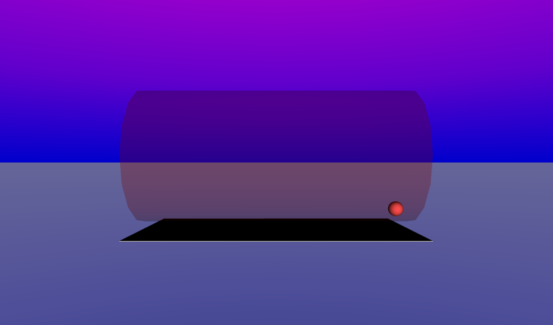
|
Many actions are too complex for animation nodes, such as computed animation paths (e.g. gravity),
algorithmic shapes (e.g. fractals), or collaborative environments (e.g. games).
You can create new sensors, interpolators, etc., using program scripts written in
Java (a powerful general-purpose language) or ECMAscript (JavaScript, an easy-to-learn language).
The Script node selects a program script, specified by a url or contained source code.
Program scripts have field and event interface declarations, each with a data type, a name, and an initial value (for fields only).
These X3D scenes are adapted directly from the
original VRML 2.0 Sourcebook chapter examples.
Also available:
Introduction to VRML97 SIGGRAPH98 course notes.
|
![[1] Figure30.1ScriptSlidingBall.x3d - sliding ball](_viewpoints/Figure30.1ScriptSlidingBall.x3d._VP_sliding_ball.png){kind=link}
![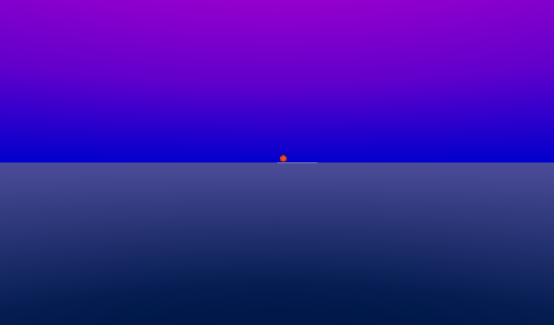[2] Figure30.1ScriptSlidingBall.x3d - (default X3D view from 0 0 10)](_viewpoints/Figure30.1ScriptSlidingBall.x3d._VP_Default_viewpoint.png){kind=link}
![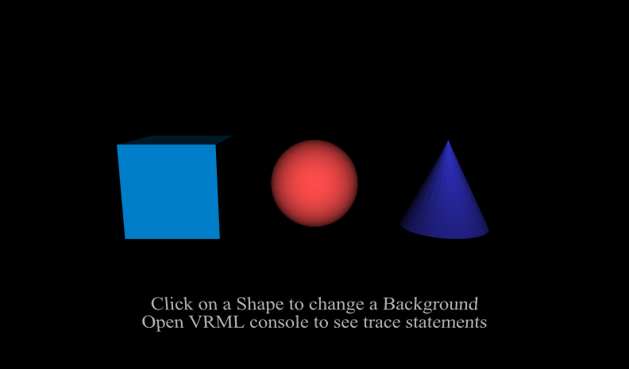[3] Figure30.2ScriptBackgroundSelect.x3d - Background select](_viewpoints/Figure30.2ScriptBackgroundSelect.x3d._VP_Background_select.png){kind=link}
![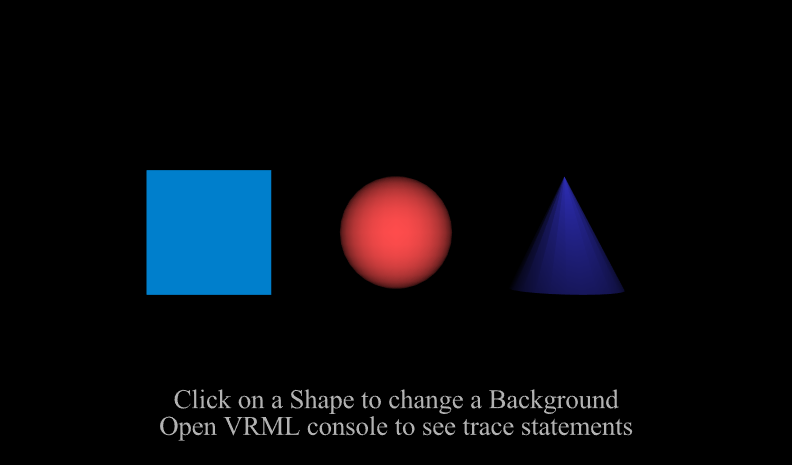[4] Figure30.2ScriptBackgroundSelect.x3d - (default X3D view from 0 0 10)](_viewpoints/Figure30.2ScriptBackgroundSelect.x3d._VP_Default_viewpoint.png){kind=link}
![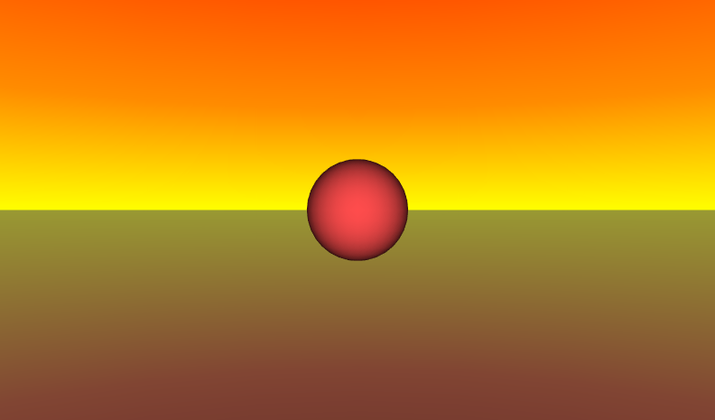[5] Figure30.3ScriptSoundActivate.x3d - toggle sound by clicking ball](_viewpoints/Figure30.3ScriptSoundActivate.x3d._VP_toggle_sound_by_clicking_ball.png){kind=link}
![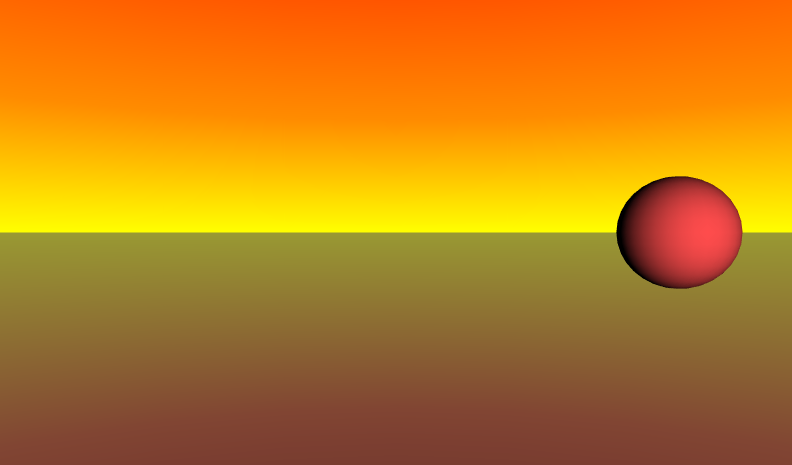[6] Figure30.3ScriptSoundActivate.x3d - move left spatialize right](_viewpoints/Figure30.3ScriptSoundActivate.x3d._VP_move_left_spatialize_right.png){kind=link}
![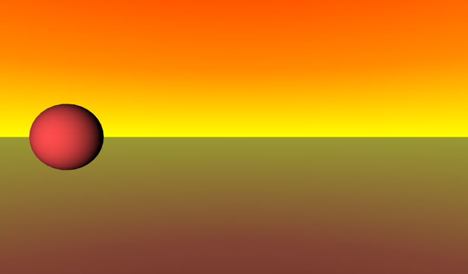[7] Figure30.3ScriptSoundActivate.x3d - move right spatialize left](_viewpoints/Figure30.3ScriptSoundActivate.x3d._VP_move_right_spatialize_left.png){kind=link}
![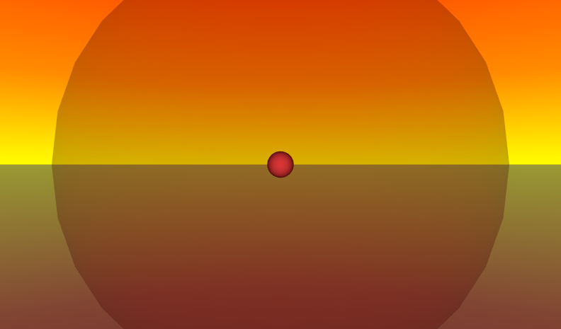[8] Figure30.3ScriptSoundActivate.x3d - outside maximum attenuation ellipsoid](_viewpoints/Figure30.3ScriptSoundActivate.x3d._VP_outside_maximum_attenuation_ellipsoid.png){kind=link}
![[9] Figure30.3ScriptSoundActivate.x3d - (default X3D view from 0 0 10)](_viewpoints/Figure30.3ScriptSoundActivate.x3d._VP_Default_viewpoint.png){kind=link}
![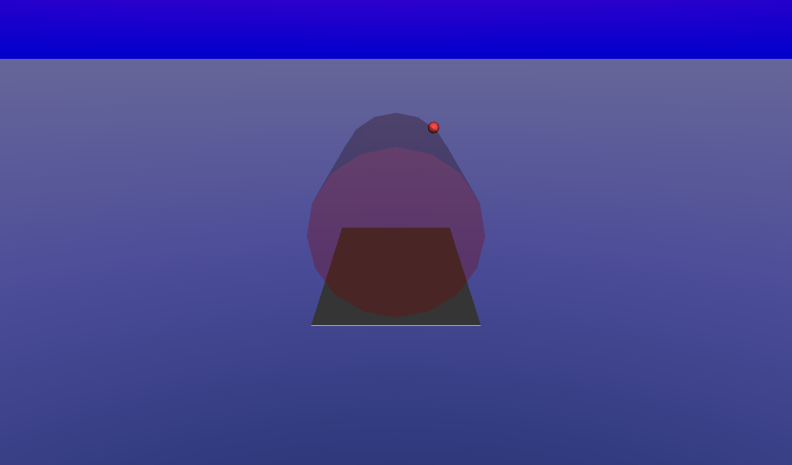[10] Figure30.4ScriptSpiralingBallTrace.x3d - spiraling ball](_viewpoints/Figure30.4ScriptSpiralingBallTrace.x3d._VP_spiraling_ball.png){kind=link}
![[11] Figure30.4ScriptSpiralingBallTrace.x3d - view from above](_viewpoints/Figure30.4ScriptSpiralingBallTrace.x3d._VP_view_from_above.png){kind=link}
![[12] Figure30.4ScriptSpiralingBallTrace.x3d - side view](_viewpoints/Figure30.4ScriptSpiralingBallTrace.x3d._VP_side_view.png){kind=link}
![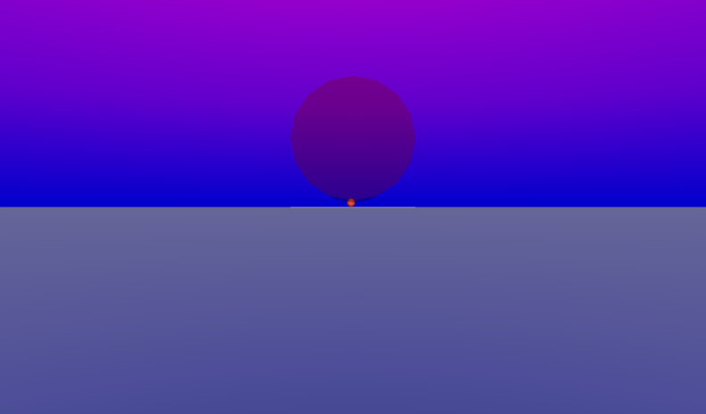[13] Figure30.4ScriptSpiralingBallTrace.x3d - (default X3D view)](_viewpoints/Figure30.4ScriptSpiralingBallTrace.x3d._VP_Default_viewpoint.png){kind=link}
![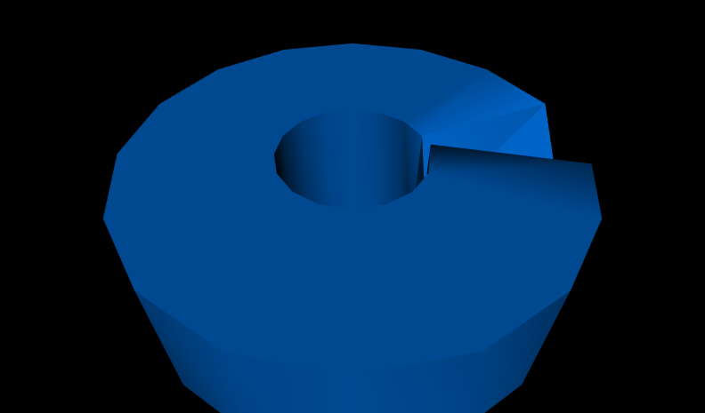[14] Figure30.5ScriptTorusBuilder.x3d - Torus](_viewpoints/Figure30.5ScriptTorusBuilder.x3d._VP_Torus.png){kind=link}
![[15] Figure30.5ScriptTorusBuilder.x3d - (default X3D view from 0 0 10)](_viewpoints/Figure30.5ScriptTorusBuilder.x3d._VP_Default_viewpoint.png){kind=link}